Introducción a CSS
Hoja de Estilos en Cascada
¿Qué es CSS y por qué es importante?
CSS define la apariencia de una página web.
Permite separar el contenido del diseño.
Facilita la reutilización y mantenimiento del código.
Tipos de CSS
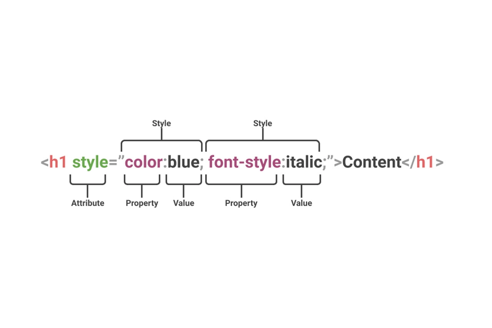
-
Inline: Se aplica directamente en la etiqueta
con
style.
<p style="color: red;">Texto</p>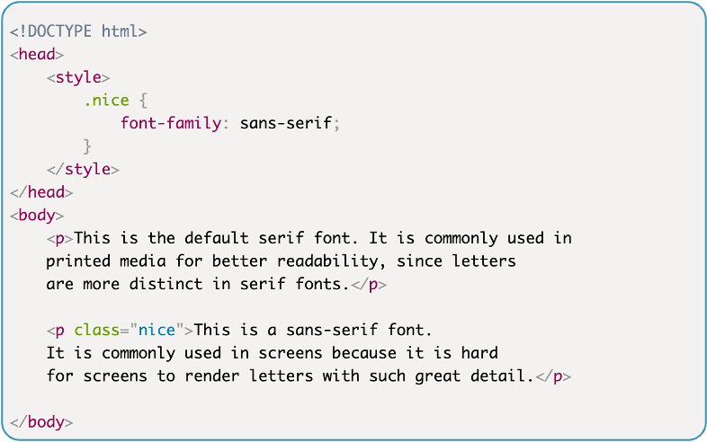
-
Interno: Se define dentro de
<style>en elhead.
<style> p { color: red; } </style>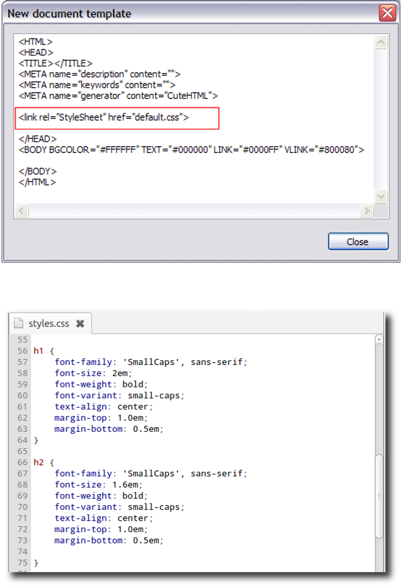
-
Externo: Se usa un archivo
.cssenlazado con<link>.
<link rel="stylesheet" href="styles.css">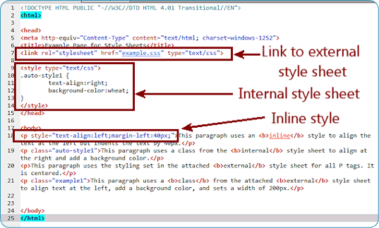
Clases e ID en CSS
Se usan para aplicar estilos a elementos específicos.
| Clase | ID |
|---|---|
| Se aplica a varios elementos. | Se aplica a un solo elemento. |
Se define con .. |
Se define con #. |
| Se puede reutilizar. | Se usa una sola vez. |
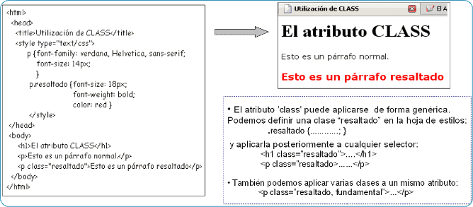
Ejemplos
.button { background-color: blue; }#header { font-size: 24px; }Pseudo Clases
Selectores que definen estados especiales de un elemento
Pseudo-clases de Interacción
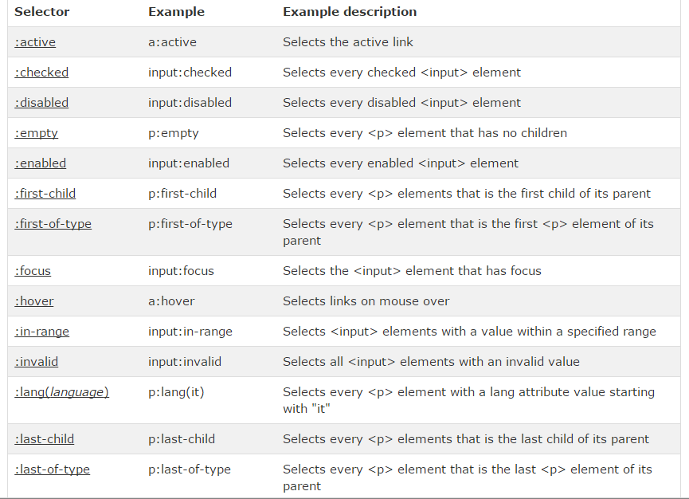
- :hover: Al pasar el cursor sobre el elemento
- :active: Al hacer clic en el elemento
- :focus: Cuando el elemento tiene foco
Pseudo-clases Estructurales
| Pseudo-clase | Descripción |
|---|---|
| :first-child | Primer hijo de su padre |
| :last-child | Último hijo de su padre |
| :nth-child(n) | n-ésimo hijo de su padre |
| :not(selector) | Elementos que no coinciden |
Ejemplos Prácticos
/* Interacción */
.button:hover { background-color: red; }
input:focus { border: 2px solid blue; }
/* Estructurales */
li:first-child { font-weight: bold; }
li:nth-child(odd) { background: #f0f0f0; }
p:not(.special) { color: gray; }Combinadores
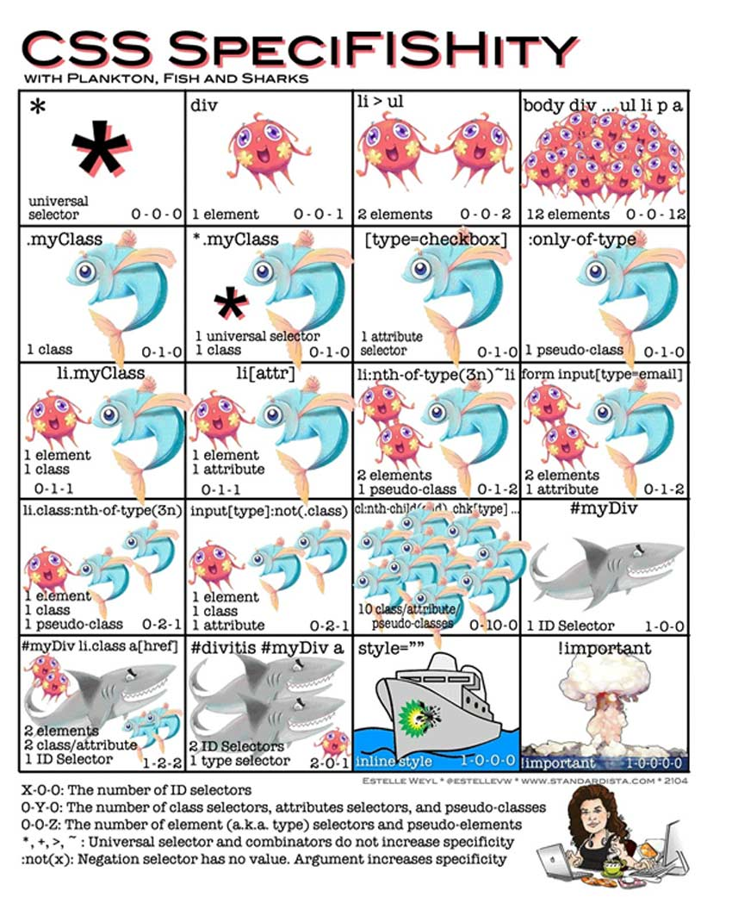
| Combinador | Descripción | Ejemplo |
|---|---|---|
| Descendente | Selecciona elementos descendientes. | div p { color: red; } |
| Hijo | Selecciona elementos hijos. | div > p { color: blue; } |
| Adyacente | Selecciona elementos adyacentes. | h1 + p { font-size: 16px; } |
| General | Selecciona elementos generales. | h1 ~ p { font-size: 16px; } |
Ejemplos
div p { color: red; }div > p { color: blue; }h1 + p { font-size: 16px; }h1 ~ p { font-size: 16px; }Box Model
Todos los elementos en CSS son cajas.

| Propiedad | Descripción |
|---|---|
| Margin | Espacio fuera del borde. |
| Border | Borde de la caja. |
| Padding | Espacio entre el contenido y el borde. |
| Content | Contenido del elemento. |
Propiedad Display
Controla el tipo de caja de renderizado de un elemento
Valores Básicos
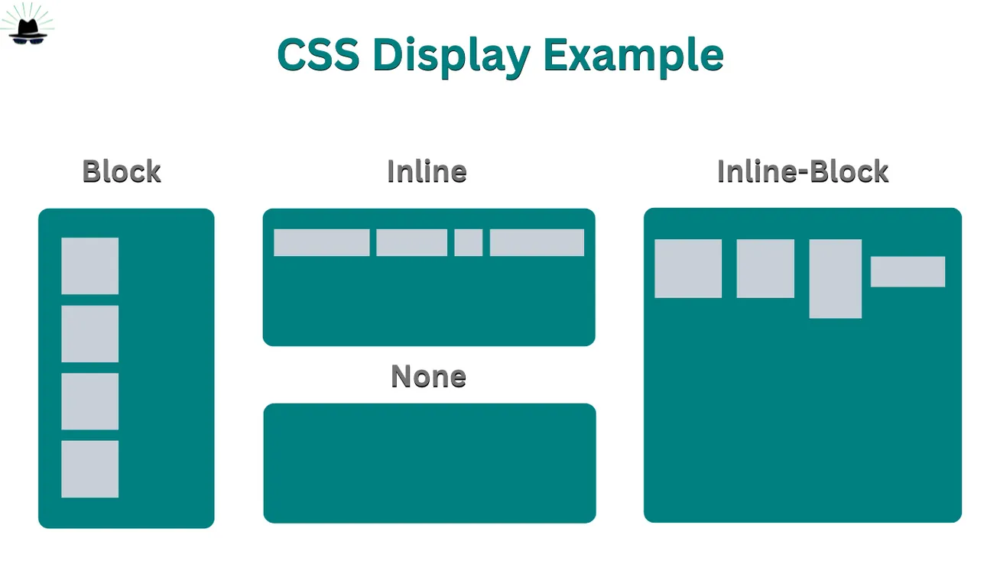
| Valor | Comportamiento |
|---|---|
| block | Ocupa todo el ancho, nueva línea |
| inline | Ancho del contenido, misma línea |
| inline-block | Inline con propiedades block |
| none | Elemento no visible ni ocupa espacio |
Valores de Layout Modernos
| Valor | Uso |
|---|---|
| flex | Contenedor flexible unidimensional |
| inline-flex | Flex en contexto inline |
| grid | Contenedor grid bidimensional |
| inline-grid | Grid en contexto inline |
Tipos de posición
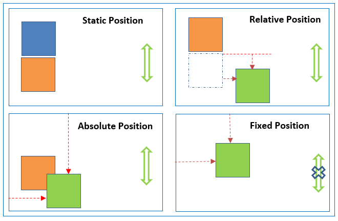
- static: Posición por defecto.
- relative: Se mueve respecto a su posición original.
- absolute: Se posiciona en relación a su ancestro posicionado.
- fixed: Permanece fijo en pantalla.
- sticky: Se comporta como relative hasta que se hace sticky.
Unidades en CSS
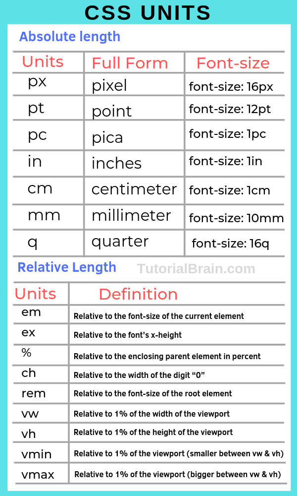
Absolutas
- px: Píxeles. (1px = 1/96 de pulgada)
- cm: Centímetros.
- in: Pulgadas. (1in = 2.54cm)
- pt: Puntos. (1pt = 1/72in)
- mm: Milímetros. (1mm = 1/10cm)
h1 { font-size: 24px; } Relativas
- %: Porcentaje.
- em: Tamaño de fuente.
- rem: Tamaño de fuente del root.
- vw/vh: Viewport width/height dimensions
h1 { font-size: 2em; }Colores y Gradientes
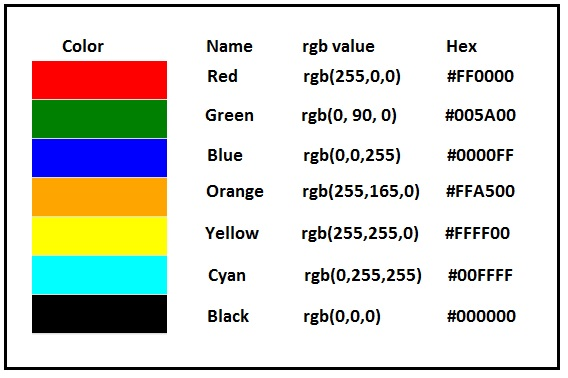
- Colores en nombres, HEX, RGB y HSL.
color: red;
color: #ff0000;
color: rgb(255, 0, 0);
color: hsl(0, 100%, 50%);
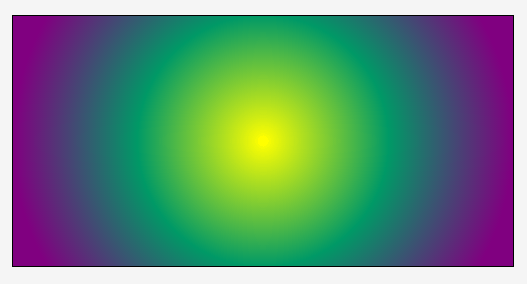
- Gradientes lineales y radiales.
- Uso de transparencia con
rgba().
background: linear-gradient(to right, red, blue);
background: radial-gradient(circle, red, blue);
background: rgba(0, 0, 0, 0.5);
CSS Custom Properties
Variables CSS para código reutilizable y mantenible
Definición y Uso
Se definen con el prefijo -- y se acceden con var()
:root {
--primary-color: #3498db;
--secondary-color: #2ecc71;
--spacing-unit: 8px;
--border-radius: 4px;
}
.button {
background-color: var(--primary-color);
padding: var(--spacing-unit);
border-radius: var(--border-radius);
}Ventajas de las Variables CSS
- Centralización de valores comunes
- Facilita el mantenimiento del código
- Permite crear temas dinámicos
- Se pueden modificar con JavaScript
- Soporte para valores por defecto con
var(--color, blue)
Ejemplo: Sistema de Temas
:root {
--bg-color: #ffffff;
--text-color: #333333;
}
[data-theme="dark"] {
--bg-color: #1a1a1a;
--text-color: #f0f0f0;
}
body {
background-color: var(--bg-color);
color: var(--text-color);
transition: all 0.3s ease;
}Fuentes y Tipografía
- Uso de fuentes seguras.
- Google Fonts.
<link href="https://fonts.googleapis.com/css2?family=Roboto:wght@400;700&display=swap" rel="stylesheet">font-family: Arial, sans-serif;| Propiedad | Descripción |
|---|---|
| font-family | Familia de fuentes. |
| font-size | Tamaño de la fuente. |
| font-weight | Grosor de la fuente. |
| font-style | Estilo de la fuente. |
| Propiedad | Descripción |
|---|---|
| text-align | Alineación del texto. |
| text-decoration | Decoración del texto. |
| text-transform | Transformación del texto. |
| line-height | Altura de línea. |
Ejemplos
font-family: Arial, sans-serif;font-size: 16px;font-weight: bold;font-style: italic;text-align: center;text-decoration: underline;text-transform: uppercase;line-height: 1.5;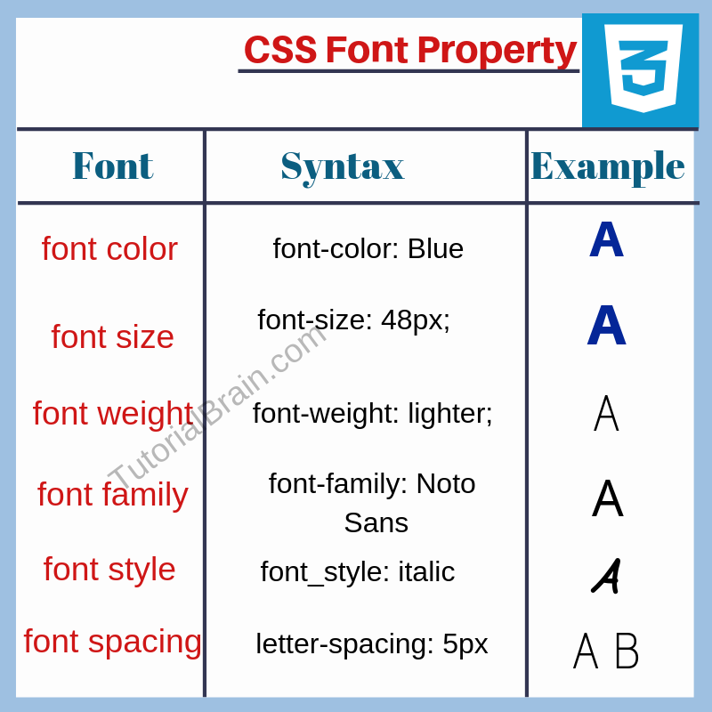
Flexbox
Modelo de layout unidimensional para distribución de elementos
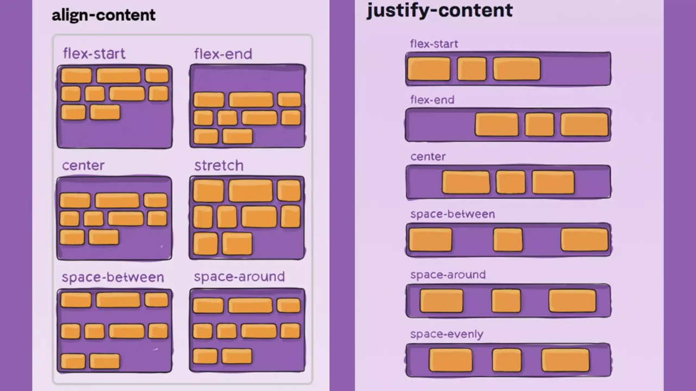
Conceptos Fundamentales
- Modelo unidimensional (fila o columna)
- Eje principal (main axis) y eje transversal (cross axis)
- Distribución flexible del espacio disponible
Propiedades del Contenedor
| Propiedad | Valores Comunes |
|---|---|
| flex-direction | row, column, row-reverse, column-reverse |
| justify-content | flex-start, center, space-between, space-around |
| align-items | flex-start, center, flex-end, stretch |
| flex-wrap | nowrap, wrap, wrap-reverse |
| gap | Espacio entre elementos (ej: 1rem) |
Propiedades de los Items
| Propiedad | Descripción |
|---|---|
| flex-grow | Factor de crecimiento |
| flex-shrink | Factor de reducción |
| flex-basis | Tamaño base del elemento |
| flex | Shorthand: flex-grow flex-shrink flex-basis |
| align-self | Alineación individual del elemento |
Ejemplo Completo de Flexbox
.container {
display: flex;
flex-direction: row;
justify-content: space-between;
align-items: center;
gap: 1rem;
flex-wrap: wrap;
}
.item {
flex: 1 1 200px; /* grow shrink basis */
min-width: 0; /* Evita overflow */
}CSS Grid
Sistema de layout bidimensional para diseños complejos
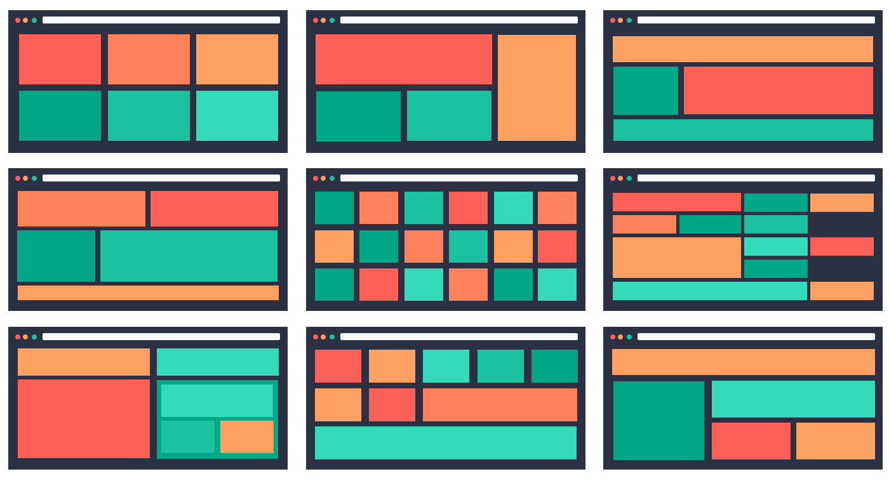
Conceptos Fundamentales
- Modelo bidimensional (filas y columnas)
- Control preciso del posicionamiento
- Ideal para layouts de página completa
Propiedades del Contenedor
| Propiedad | Ejemplo |
|---|---|
| grid-template-columns | repeat(3, 1fr), 200px auto 1fr |
| grid-template-rows | 100px auto 50px |
| gap / grid-gap | 1rem 2rem (row column) |
| grid-template-areas | Define áreas nombradas |
| grid-auto-flow | row, column, dense |
Unidades Grid Específicas
- fr (fraction): Unidad fraccionaria del espacio disponible
- repeat(): Función para repetir patrones
- minmax(): Define rango de tamaño (min, max)
- auto-fit / auto-fill: Grids responsivos automáticos
grid-template-columns: repeat(auto-fit, minmax(250px, 1fr));Ejemplo: Layout con Grid Areas
.container {
display: grid;
grid-template-columns: 200px 1fr 200px;
grid-template-rows: auto 1fr auto;
gap: 1rem;
grid-template-areas:
"header header header"
"sidebar content ads"
"footer footer footer";
}
.header { grid-area: header; }
.sidebar { grid-area: sidebar; }
.content { grid-area: content; }
.ads { grid-area: ads; }
.footer { grid-area: footer; }Flexbox vs Grid: Cuándo usar cada uno
| Flexbox | Grid |
|---|---|
| Layouts unidimensionales | Layouts bidimensionales |
| Navegación, barras de herramientas | Layouts de página completa |
| Alineación de contenido | Estructuras complejas |
| Componentes pequeños | Galerías, dashboards |
Responsive Design
Media Queries para diseños adaptativos
Concepto de Mobile-First
- Diseño base para dispositivos móviles
- Mejoras progresivas para pantallas más grandes
- Mejor rendimiento en dispositivos móviles
/* Base: Mobile */
.container { padding: 1rem; }
/* Tablet y superior */
@media (min-width: 768px) {
.container { padding: 2rem; }
}
/* Desktop */
@media (min-width: 1024px) {
.container { padding: 3rem; }
}Breakpoints Comunes
| Dispositivo | Breakpoint |
|---|---|
| Mobile | Base / 0px |
| Tablet | 768px |
| Desktop | 1024px |
| Large Desktop | 1440px |
Media Features Avanzados
/* Orientación */
@media (orientation: landscape) {
.gallery { grid-template-columns: repeat(4, 1fr); }
}
/* Preferencias del sistema */
@media (prefers-color-scheme: dark) {
:root { --bg: #1a1a1a; --text: #fff; }
}
/* Resolución */
@media (min-resolution: 2dppx) {
.logo { background-image: url('logo@2x.png'); }
}
/* Combinaciones */
@media (min-width: 768px) and (max-width: 1024px) {
.content { width: 750px; }
}Container Queries (Moderno)
Consultas basadas en el contenedor en lugar del viewport
.card-container {
container-type: inline-size;
container-name: card;
}
@container card (min-width: 400px) {
.card {
display: grid;
grid-template-columns: auto 1fr;
}
}
/* El diseño responde al tamaño del contenedor,
no al tamaño de la ventana */Funciones CSS Modernas
Herramientas para diseños fluidos y responsivos
calc() - Cálculos Dinámicos
/* Ancho dinámico */
.sidebar {
width: calc(100% - 300px);
}
/* Responsive spacing */
.container {
padding: calc(1rem + 2vw);
}
/* Combinación de unidades */
.header {
height: calc(100vh - 60px);
}clamp() - Valores Acotados
Sintaxis: clamp(mínimo, preferido, máximo)
/* Tipografía fluida */
h1 {
font-size: clamp(1.5rem, 5vw, 3rem);
/* Nunca menor a 1.5rem ni mayor a 3rem */
}
/* Ancho responsivo */
.container {
width: clamp(300px, 90%, 1200px);
}
/* Padding adaptativo */
.card {
padding: clamp(1rem, 3vw, 3rem);
}min() y max()
/* min() - usa el valor más pequeño */
.container {
width: min(90%, 1200px);
/* 90% en pantallas grandes, 1200px máximo */
}
/* max() - usa el valor más grande */
.content {
width: max(50%, 300px);
/* Nunca menor a 300px */
}
/* Combinaciones */
.element {
margin: max(1rem, 3vw) min(2rem, 5vw);
}Otras Propiedades Modernas
/* aspect-ratio */
.video {
aspect-ratio: 16 / 9;
width: 100%;
}
/* object-fit */
img {
object-fit: cover;
width: 100%;
height: 300px;
}
/* backdrop-filter */
.glass-effect {
backdrop-filter: blur(10px);
background: rgba(255, 255, 255, 0.1);
}Transiciones CSS
Cambios suaves entre estados de propiedades
Sintaxis de Transition
transition: property duration timing-function delay;| Parámetro | Ejemplo |
|---|---|
| property | all, opacity, transform |
| duration | 0.3s, 200ms |
| timing-function | ease, linear, cubic-bezier() |
| delay | 0s, 100ms |
Ejemplos de Transiciones
/* Transición simple */
.button {
background-color: blue;
transition: background-color 0.3s ease;
}
.button:hover {
background-color: red;
}
/* Múltiples propiedades */
.card {
transition:
transform 0.3s ease,
box-shadow 0.3s ease;
}
.card:hover {
transform: translateY(-5px);
box-shadow: 0 10px 20px rgba(0,0,0,0.2);
}Timing Functions
| Función | Comportamiento |
|---|---|
| linear | Velocidad constante |
| ease | Inicio lento, rápido, fin lento |
| ease-in | Inicio lento |
| ease-out | Fin lento |
| ease-in-out | Inicio y fin lentos |
| cubic-bezier() | Curva personalizada |
Animaciones con @keyframes
Control total sobre animaciones complejas
Definición de Keyframes
@keyframes fadeIn {
from {
opacity: 0;
transform: translateY(20px);
}
to {
opacity: 1;
transform: translateY(0);
}
}
/* Uso */
.element {
animation: fadeIn 0.5s ease-out;
}Propiedades de Animation
| Propiedad | Ejemplo |
|---|---|
| animation-name | fadeIn |
| animation-duration | 2s |
| animation-timing-function | ease-in-out |
| animation-delay | 0.5s |
| animation-iteration-count | infinite, 3 |
| animation-direction | normal, reverse, alternate |
| animation-fill-mode | forwards, backwards, both |
Animaciones Complejas
@keyframes pulse {
0%, 100% {
transform: scale(1);
opacity: 1;
}
50% {
transform: scale(1.1);
opacity: 0.8;
}
}
.notification {
animation: pulse 2s ease-in-out infinite;
}
/* Shorthand completo */
.element {
animation: slideIn 1s ease-out 0.5s 1 normal forwards;
}Optimización de Rendimiento
- Preferir
transformyopacity - Evitar animar
width,height,top,left - Usar
will-changecon precaución - Reducir el número de elementos animados simultáneamente
/* Animación optimizada */
.card {
will-change: transform, opacity;
transition: transform 0.3s ease,
opacity 0.3s ease;
}
.card:hover {
transform: translateY(-5px) scale(1.02);
}Buenas Prácticas en CSS
Código mantenible, escalable y eficiente
Nomenclatura y Organización
- Usar nombres de clases descriptivos y semánticos
- Seguir metodologías: BEM, SMACSS, OOCSS
- Agrupar selectores relacionados
- Comentar secciones complejas
/* BEM: Block Element Modifier */
.card { }
.card__title { }
.card__title--highlighted { }
/* Organización por componentes */
/* ===== Header ===== */
.header { }
.header__nav { }Especificidad y Selectores
- Evitar selectores demasiado específicos
- Minimizar el uso de
!important - Preferir clases sobre IDs para estilos
- Evitar anidar selectores en exceso
/* Mal */
div#container > ul.list > li.item a { }
/* Bien */
.nav-link { }
/* Evitar */
.button { color: red !important; }Rendimiento
- Minimizar el uso de selectores universales (*)
- Evitar selectores de atributos complejos
- Reducir repaints y reflows
- Usar CSS crítico inline para above-the-fold
- Minificar y comprimir archivos en producción
Mantenibilidad
- Usar variables CSS para valores repetidos
- Aplicar mobile-first approach
- Separar concerns: layout, theme, components
- Documentar decisiones arquitectónicas
- Validar CSS con herramientas como Stylelint
Accesibilidad
- Mantener contraste adecuado (WCAG 2.1)
- No eliminar outlines sin alternativa
- Usar unidades relativas para texto
- Respetar prefers-reduced-motion
@media (prefers-reduced-motion: reduce) {
* {
animation-duration: 0.01ms !important;
transition-duration: 0.01ms !important;
}
}CSS Moderno en 2025-2026
- CSS Variables para temas dinámicos
- Container Queries para componentes responsivos
- Funciones matemáticas: clamp(), min(), max()
- Flexbox y Grid para layouts robustos
- Animaciones optimizadas con transform y opacity
- Mobile-first y diseño adaptativo